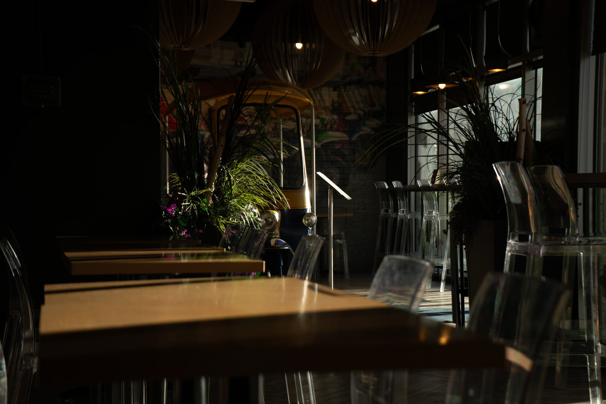
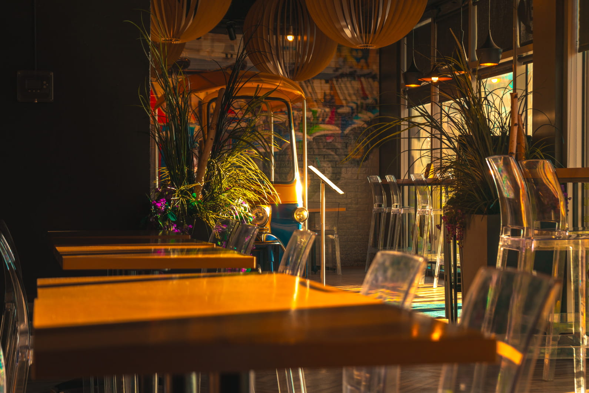
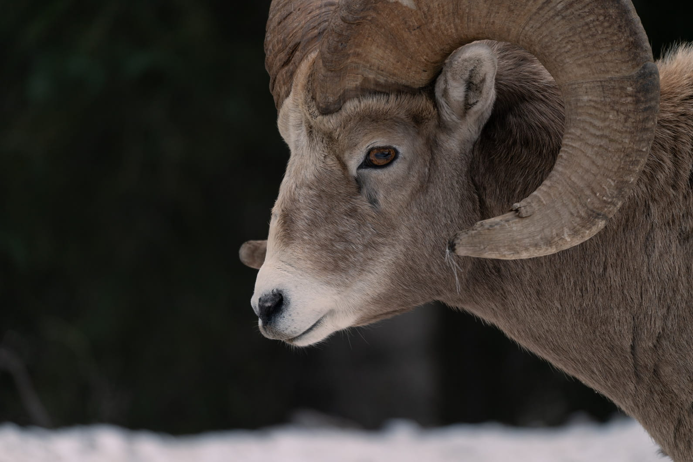

Photography is a super unique, and interesting subject, being both a diverse career, and also a super
time-consuming, but fun hobby!
The best thing about photography is that you can love it for years and learn something new everyday. The most
essential part of photography is the creative aspect. Taking a photo is an art, not just a simple press of a
button.
To me, photography is my passion, and for the past five or so years, I have spent a lot of time learning the
art, and investing a lot of time adventuring to new places.
⇓ My Gallery ⇓
Visit My Website Here
Check out the editing process of some of my photos!


